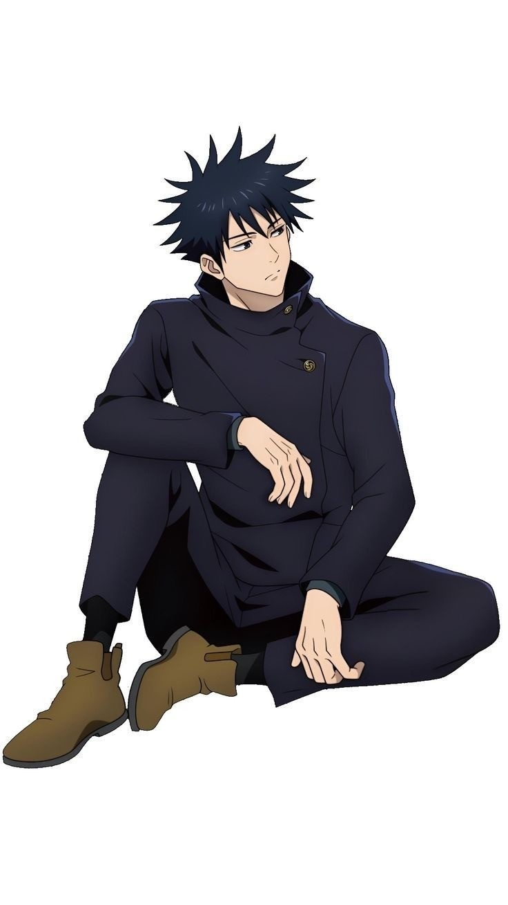

Who is this man?
Fushiguro Megumi, or Megumi Fushiguro if you're an American who doesn't care about how Japan organises names... is a first year student at Jujutsu Tech, a fictional high school, from the story of Jujutsu Kaisen. He's around 15-16 years old, and is totally emotionally repressed. Like dang bro, you good? You know you can show emotion right? RIGHT???
Right, anyway, Megumi grew up without his parents really, and was raised mostly by his half sister, Tsumiki, until about the age of 5 when a man named Gojo Satoru found him and basically adopted him. Throughout middle school, Megumi got in fights with other kids for seemingly no reason. But, Megumi of course did have a reason, and it was that he hated bad people, those bad people being all the bullies and slackers in the school.
*sigh* Megumi, you can't just go around hitting people you don't like. it's not nice.
Fast foward to when Megumi started high school, and his sister Tsumiki slipped into a coma and hasn't woken up since.